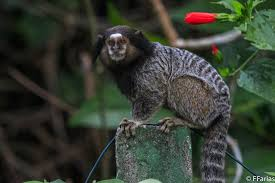

Mico Estrela
Nome científico: (Callithrix penicillata Geoffroy, 1812)
Nome comum: Sagui de Tufos Pretos, mico-estrela.
Classificação biológica:
Domínio: Eukaryota.
Reino: Animalia.
Filo: Chordata.
Classe: Mammalia.
Ordem: Primates.
Família: Callitrichidae.
Gênero: Callithrix.
Espécie: Callithrix penicillata.
Nutrição: Onívoro.
Hábitos alimentares: Alimenta-se de frutos, néctar, insetos, pequenos vertebrados e exsudatos vegetais.
Morfologia do corpo: Pequeno primata com pelagem acinzentada, tufos pretos nas orelhas e cauda longa e anelada. Mede entre 20 e 30 cm de comprimento, com uma cauda de até 40 cm, e pesa entre 300 e 400 g.
Comportamento: Vive em grupos familiares, sendo ativo durante o dia. Comunica-se por vocalizações e expressões faciais.
Principais Alimentos: Frutos, néctar, insetos, pequenos vertebrados e exsudatos vegetais.
Principais Predadores: Aves de rapina, cobras e mamíferos carnívoros.
Locais habitados
Distribuição: Encontrado nos biomas Cerrado e Mata Atlântica.

Habitat: Habita florestas tropicais, cerrados e áreas urbanas arborizadas.
Reprodução: A gestação dura cerca de 140 a 150 dias, resultando geralmente em ninhadas de 2 filhotes, que recebem cuidados de todo o grupo.